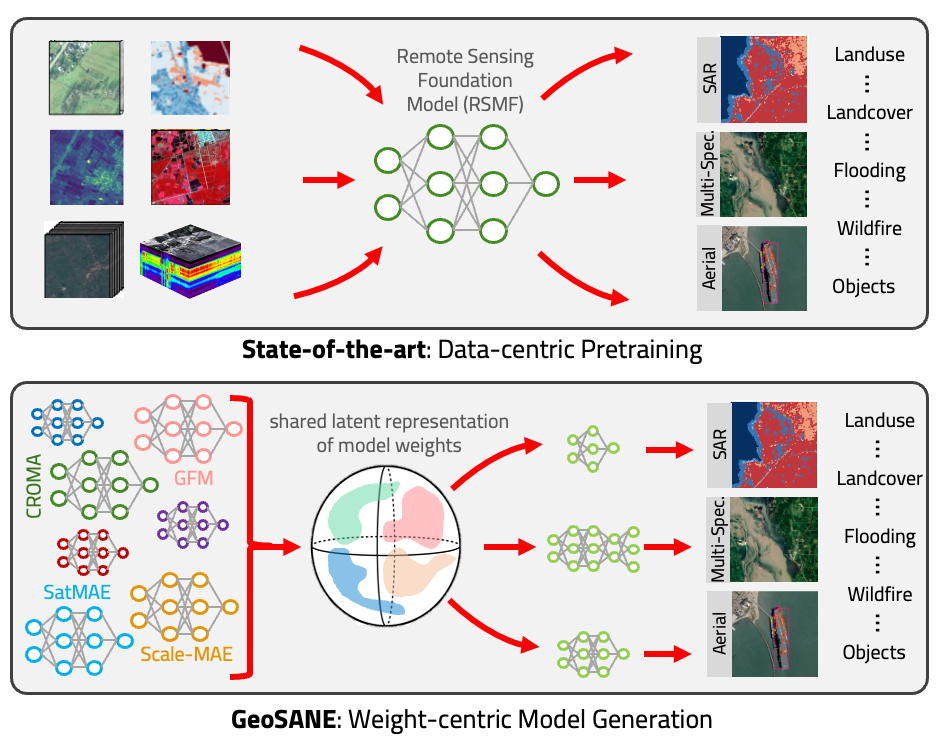
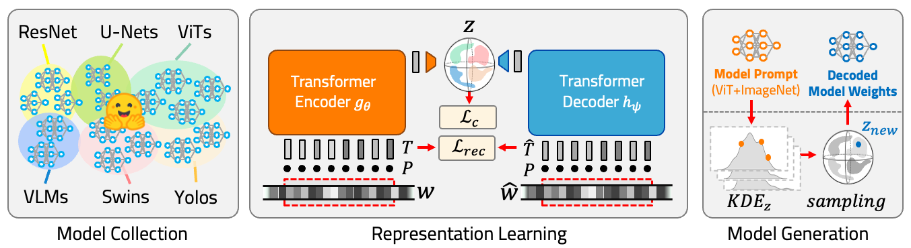
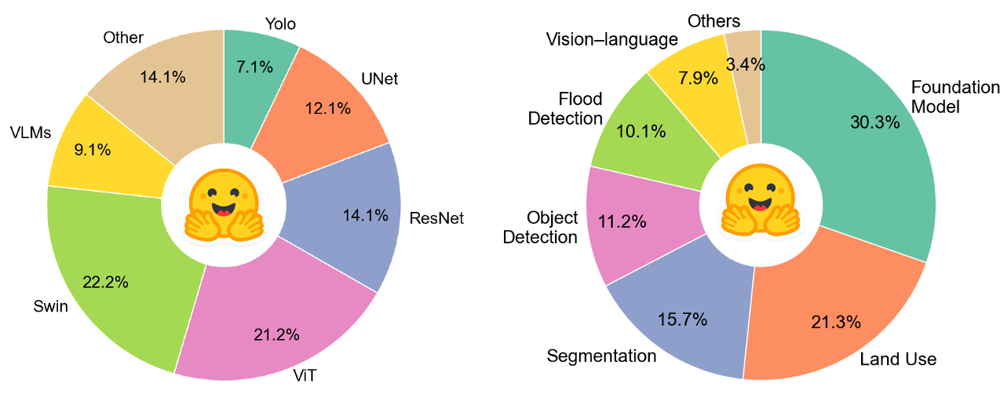
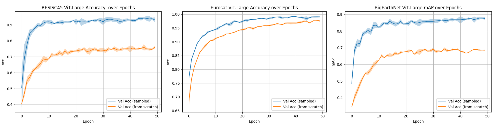
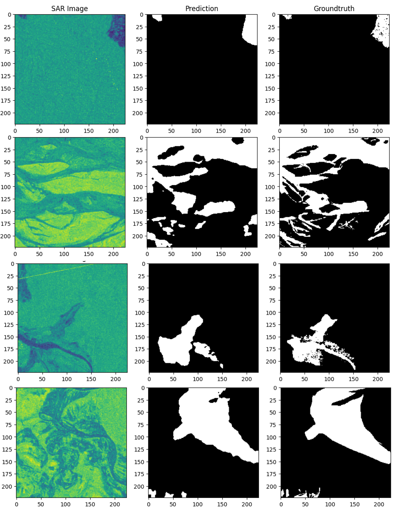
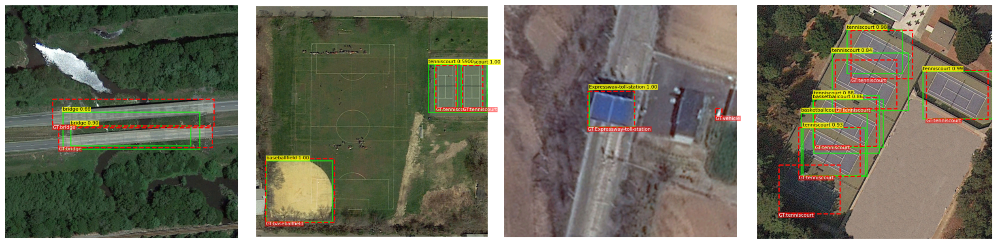
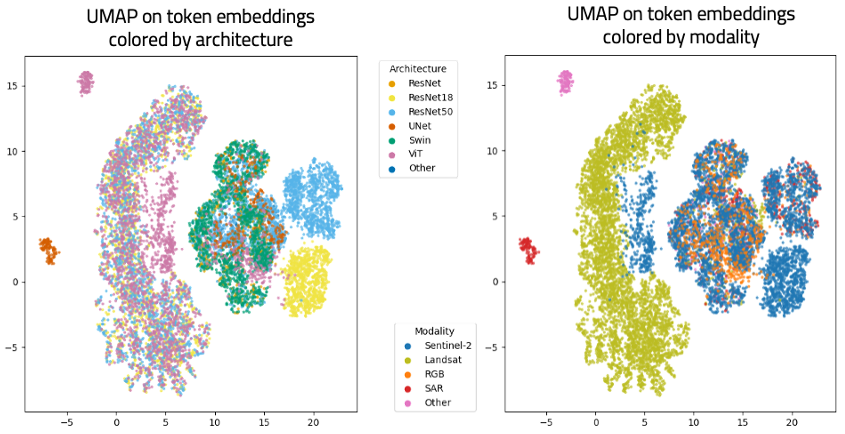

TL;DR
- GeoSANE learns a shared latent representation directly from model weights.
- It unifies knowledge from heterogeneous geospatial foundation and task-specific models.
- It can generate models for classification, segmentation and object detection.
- It can also directly generate lightweight models (e.g., MobileNet-scale ~3.5M parameters) that outperform distilled or pruned counterparts.
Abstract
Recent advances in remote sensing have led to an increase in the number of available foundation models; each trained on different modalities, datasets, and objectives, yet capturing only part of the vast geospatial knowledge landscape. While these models show strong results within their respective domains, their capabilities remain complementary rather than unified. Therefore, instead of choosing one model over another, we aim to combine their strengths into a single shared representation.
We introduce GeoSANE, a geospatial model foundry that learns a unified neural representation from the weights of existing foundation models and task-specific models, able to generate novel neural networks weights on-demand. Given a target architecture, GeoSANE generates weights ready for finetuning for classification, segmentation, and detection tasks across multiple modalities.
Models generated by GeoSANE consistently outperform their counterparts trained from scratch, match or surpass state-of-the-art remote sensing foundation models, and outperform models obtained through pruning or knowledge distillation when generating lightweight networks. Evaluations across ten diverse datasets and on GEO-Bench confirm its strong generalization capabilities. By shifting from pre-training to weight generation, GeoSANE introduces a new framework for unifying and transferring geospatial knowledge across models and tasks.
How it works
Method
GeoSANE follows a simple three-stage pipeline: collect remote sensing models, learn a shared latent weight space, and generate new weights for a user-specified prompt architecture.

1. Model collection
GeoSANE is trained on a diverse collection of remote sensing models covering different architectures, modalities, and tasks.
2. Latent weight-space learning
Model parameters are tokenized and processed by a transformer encoder-decoder to learn a shared latent representation of neural network weights.
3. On-demand generation
Given a prompt architecture such as ViT-L or Swin-B, GeoSANE samples in latent space and decodes new weights ready for fine-tuning.
Diverse model collection

The training pool spans foundation models, segmentation models, detectors, multimodal models, and more.
Why this matters
- No need to train yet another foundation model from raw data.
- Knowledge transfer happens directly in weight space.
- The same learned space can generate both large and lightweight models.
Benchmarks
Results
GeoSANE improves over training from scratch, is competitive with strong remote sensing foundation models, and generates lightweight models that outperform pruning and distillation baselines.
Main Takeaways
| Experiment | Takeaway |
|---|---|
| Comparing with training from scratch | GeoSANE improves performance across all ten benchmark datasets. |
| Comparing with other remote sensing foundation models | GeoSANE achieves best or second-best performance across the main benchmarks. |
| Comapring with pruning and distillation | GeoSANE directly generates lightweight models that outperform compressed baselines in most settings. |
| Comparing with prompt models | Generated models consistently outperform the ImageNet-pretrained prompt architectures used for generation. |

Qualitative analysis
Generated models across tasks
GeoSANE is not limited to classification. The learned latent space supports segmentation and object detection through generated backbones fine-tuned for downstream applications.
Flood segmentation

Examples on Sen1Floods11 showing SAR input, prediction, and ground truth.
Object detection

Detection examples on DIOR dataset in aerial imagery.
Latent structure

The learned weight space organizes remote sensing models into meaningful clusters by both architecture and sensing modality.
Citation
BibTeX
@article{XXXX,
title = {GeoSANE: Learning Geospatial Representations from Models, Not Data},
author = {Hanna, Jo{"e}lle and Falk, Damian and Yu, Stella X. and Borth, Damian},
journal = {arXiv preprint arXiv:XXXX.XXXXX},
year = {2026}
}